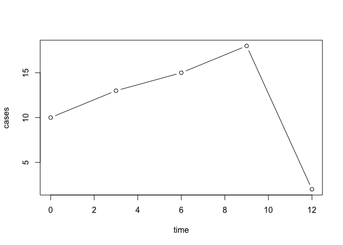

epichains: Methods for simulating and analysing the size and length of transmission chains from branching process models 
epichains is an R package to simulate, analyse, and visualize the size and length of branching processes with a given offspring distribution. These models are often used in infectious disease epidemiology, where the chains represent chains of transmission, and the offspring distribution represents the distribution of secondary infections caused by an infected individual.
epichains re-implements bpmodels by providing dedicated data structures that allow easy manipulation and interoperability with other existing packages for handling transmission chain and contact-tracing data.
epichains is developed at the Centre for the Mathematical Modelling of Infectious Diseases at the London School of Hygiene and Tropical Medicine as part of the Epiverse Initiative.
Installation
The latest development version of the epichains package can be installed via
# check whether {pak} is installed
if (!require("pak")) install.packages("pak")
pak::pak("epiverse-trace/epichains")To load the package, use
Quick start
Chain likelihoods
epichains provides four main functions:
likelihood()
This function calculates the likelihood/loglikelihood of observing a vector of outbreak summaries obtained from transmission chains. Summaries here refer to transmission chain sizes or lengths/durations.
likelihood() requires a vector of chain summaries (sizes or lengths), chains, the corresponding statistic to calculate, statistic, and the offspring distribution, offspring_dist its associated parameters. It also requires nsim_obs, which is the number of simulations to run if the likelihoods do not have a closed-form solution and must be simulated. This argument will be explained further in the “Getting Started” vignette.
Let’s look at the following example where we estimate the loglikelihood of observing chain_sizes.
set.seed(121)
# example of observed chain sizes
# randomly generate 20 chains of size between 1 to 10
chain_sizes <- sample(1:10, 20, replace = TRUE)
# estimate loglikelihood of the observed chain sizes
likelihood_eg <- likelihood(
chains = chain_sizes,
statistic = "size",
offspring_dist = "pois",
nsim_obs = 100,
lambda = 0.5
)
# Print the estimate
likelihood_eg
#> [1] -67.82879Chain simulation
There are three simulation functions, herein referred to colelctively as the simulate_*() functions. ``
simulate_tree()
simulate_tree() simulates an outbreak from a given number of infections. It retains and returns information on infectors (ancestors), infectees, the generation of infection, and the time, if a serial distribution is specified.
Let’s look at an example where we simulate the transmission trees of 10 initial infections/chains. We assume a poisson offspring distribution with mean, lambda = 0.9, and a serial interval of 3 days:
set.seed(123)
sim_tree_eg <- simulate_tree(
nchains = 10,
statistic = "size",
offspring_dist = "pois",
stat_max = 10,
serials_dist = function(x) 3,
lambda = 0.9
)
head(sim_tree_eg)
#> < tree head (from first known ancestor) >
#> chain_id sim_id ancestor generation time
#> 11 2 2 1 2 3
#> 13 3 2 1 2 3
#> 14 4 2 1 2 3
#> 16 5 2 1 2 3
#> 19 7 2 1 2 3
#> 20 8 2 1 2 3
simulate_summary()
simulate_summary() is basically simulate_tree() except that it does not retain information on each infector and infectee. It returns the eventual size or length/duration of each transmission chain.
Here is an example to simulate the previous examples without intervention, returning the size of each of the 10 chains. It assumes a poisson offspring distribution with mean of 0.9.
set.seed(123)
simulate_summary_eg <- simulate_summary(
nchains = 10,
statistic = "size",
offspring_dist = "pois",
stat_max = 10,
lambda = 0.9
)
# Print the results
simulate_summary_eg
#> `epichains` object
#>
#> [1] 1 Inf 4 4 Inf 1 2 Inf 5 3
#>
#> Simulated chain sizes:
#>
#> Max: 5
#> Min: 1
simulate_tree_from_pop()
simulate_tree_from_pop() simulates outbreaks based on a specified population size and pre-existing immunity until the susceptible pool runs out.
Here is a quick example where we simulate an outbreak in a population of size 1000. We assume individuals have a poisson offspring distribution with mean, lambda = 1, and serial interval of 3:
set.seed(7)
sim_tree_from_pop_eg <- simulate_tree_from_pop(
pop = 1000,
offspring_dist = "pois",
lambda = 1,
serials_dist = function(x) {3}
)
head(sim_tree_from_pop_eg)
#> < tree head (from first known ancestor) >
#> sim_id ancestor generation time
#> 2 2 1 2 3
#> 3 3 1 2 3
#> 4 4 1 2 3
#> 5 5 1 2 3
#> 6 6 2 3 6
#> 7 7 6 4 9Simulating interventions
All the simulate_*() functions can model interventions that reduce the R0, using the intvn_mean_reduction argument. In general, these can be interpreted as population-level interventions.
To illustrate this, we will use the previous examples for each function and specify a population-level intervention that reduces R0 by 50%.
Using simulate_tree(), we can specify an initial number of cases and a population level intervention, intvn_mean_reduction, that reduces R0 by 50%.
set.seed(123)
sim_tree_intvn_eg <- simulate_tree(
nchains = 10,
statistic = "size",
offspring_dist = "pois",
intvn_mean_reduction = 0.5,
stat_max = 10,
serials_dist = function(x) 3,
lambda = 0.9
)
head(sim_tree_intvn_eg)
#> < tree head (from first known ancestor) >
#> chain_id sim_id ancestor generation time
#> 11 2 2 1 2 3
#> 12 4 2 1 2 3
#> 13 5 2 1 2 3
#> 15 8 2 1 2 3
#> 14 5 3 1 2 3
#> 16 2 3 2 3 6Here is an example with simulate_summary(), modelling an intervention that reduces R0 by 50%.
simulate_summary_intvn_eg <- simulate_summary(
nchains = 10,
statistic = "size",
offspring_dist = "pois",
intvn_mean_reduction = 0.5,
stat_max = 10,
lambda = 0.9
)
# Print the results
simulate_summary_intvn_eg
#> `epichains` object
#>
#> [1] 5 3 3 3 5 2 2 1 1 1
#>
#> Simulated chain sizes:
#>
#> Max: 5
#> Min: 1Finally, let’s use simulate_tree_from_pop().
set.seed(7)
sim_tree_from_pop_intvn_eg <- simulate_tree_from_pop(
pop = 1000,
offspring_dist = "pois",
intvn_mean_reduction = 0.5,
lambda = 1,
serials_dist = function(x) {3}
)
head(sim_tree_from_pop_intvn_eg)
#> < tree head (from first known ancestor) >
#> sim_id ancestor generation time
#> 2 2 1 2 3
#> 3 3 1 2 3
#> 4 4 1 2 3Other functionalities
Summarising
You can run summary() on <epichains> objects to get useful summaries.
# Example with simulate_tree()
set.seed(123)
sim_tree_eg <- simulate_tree(
nchains = 10,
statistic = "size",
offspring_dist = "pois",
stat_max = 10,
serials_dist = function(x) 3,
lambda = 0.9
)
summary(sim_tree_eg)
#> $chains_run
#> [1] 10
#>
#> $max_time
#> [1] 12
#>
#> $unique_ancestors
#> [1] 9
#>
#> $max_generation
#> [1] 5
# Example with simulate_summary()
set.seed(123)
simulate_summary_eg <- simulate_summary(
nchains = 10,
statistic = "size",
offspring_dist = "pois",
stat_max = 10,
lambda = 0.9
)
# Get summaries
summary(simulate_summary_eg)
#> $chains_run
#> [1] 10
#>
#> $max_chain_stat
#> [1] 5
#>
#> $min_chain_stat
#> [1] 1Aggregating
You can aggregate <epichains> objects returned by the simulate_*() functions into a time series, which is a <data.frame> with columns “cases” and either “generation” or “time”, depending on the value of grouping_var.
To aggregate over “time”, you must have specified a serial interval distribution in the simulation step.
# Example with simulate_tree()
set.seed(123)
sim_tree_eg <- simulate_tree(
nchains = 10,
statistic = "size",
offspring_dist = "pois",
stat_max = 10,
serials_dist = function(x) 3,
lambda = 0.9
)
aggregate(sim_tree_eg, grouping_var = "time")
#> time cases
#> 1 0 10
#> 2 3 13
#> 3 6 15
#> 4 9 18
#> 5 12 2Plotting
Aggregated <epichains> objects can easily be plotted using base R or ggplot2 with little to no data manipulation.
Here is an end-to-end example from simulation through aggregation to plotting.
# Run simulation with simulate_tree()
set.seed(123)
sim_tree_eg <- simulate_tree(
nchains = 10,
statistic = "size",
offspring_dist = "pois",
stat_max = 10,
serials_dist = function(x) 3,
lambda = 0.9
)
# Aggregate cases over time
sim_aggreg <- aggregate(sim_tree_eg, grouping_var = "time")
# Plot cases over time
plot(sim_aggreg, type = "b")
Package vignettes
Specific use cases of epichains can be found in the online documentation as package vignettes, under “Articles”.
Reporting bugs
To report a bug please open an issue.
Contribute
We welcome contributions to enhance the package’s functionalities. If you wish to do so, please follow the package contributing guide.
Code of conduct
Please note that the epichains project is released with a Contributor Code of Conduct. By contributing to this project, you agree to abide by its terms.
Citing this package
citation("epichains")
#> To cite package epichains in publications use:
#>
#> Sebastian Funk, Flavio Finger, and James M. Azam (2023). epichains:
#> Analysing transmission chain statistics using branching process
#> models, website: https://github.com/epiverse-trace/epichains/
#>
#> A BibTeX entry for LaTeX users is
#>
#> @Manual{,
#> title = {epichains: Analysing transmission chain statistics using branching process models},
#> author = {{Sebastian Funk} and {Flavio Finger} and {James M. Azam}},
#> year = {2023},
#> url = {https://github.com/epiverse-trace/epichains/},
#> }